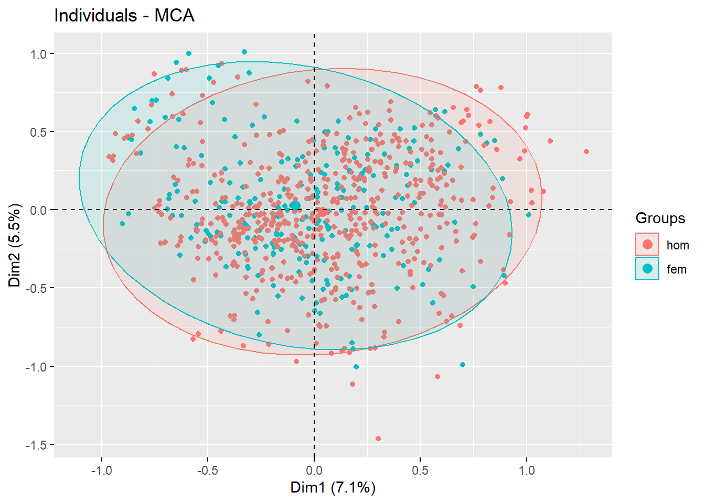

5 Información Financiera de 810 sujetos
En la librería ade4 se encuentra la base de datos banque que contiene información de 810 sujetos de una entidad financiera. Realice un ACM y comente sus resultados.
Tabla de Factores
Descripción:
Variables consideradas en el estudio
csp: “Categorías Socio-Profesionales” un factor con niveles
duree: “Relaciones temporales con el cliente” un factor con niveles
oppo: “¿Detuvo un cheque?” un factor con niveles
age: “Edad del cliente” un factor con niveles
sexe: “Género del cliente” un factor con niveles
interdit: “No se permite el talonario de cheques” un factor con niveles
cableue: “¿Posee una tarjeta bancaria?” un factor con niveles
assurvi: “¿Contrato de seguro de vida?” un factor con niveles
soldevu: “Saldo de las cuentas corrientes” un factor con niveles
eparlog: “Monto de la cuenta de asociación de ahorro y préstamo” un factor con niveles
eparliv: “Monto de la cuenta de ahorro” un factor con niveles
credhab: “Propietario de préstamo hipotecario” un factor con niveles
credcon: “Monto del crédito al consumo” un factor con niveles
versesp: “Depósitos de cheques” un factor con niveles
retresp: “Retiros de efectivo” un factor con niveles
remiche: “Monto de cheques endosados” un factor con niveles
# Instalar librería
library(ade4)
library(FactoMineR)
# Base de datos banque
data(banque)
# Análisis de Correspondencia Múltiple (ACM)
modelo <- MCA(banque[1:16], ncp = 2, quali.sup= 5, graph = FALSE)
summary(modelo)
Call:
MCA(X = banque[1:16], ncp = 2, quali.sup = 5, graph = FALSE)
Eigenvalues
Dim.1 Dim.2 Dim.3 Dim.4 Dim.5 Dim.6 Dim.7
Variance 0.179 0.140 0.122 0.102 0.091 0.085 0.084
% of var. 7.050 5.514 4.823 4.036 3.610 3.367 3.315
Cumulative % of var. 7.050 12.564 17.387 21.423 25.033 28.400 31.716
Dim.8 Dim.9 Dim.10 Dim.11 Dim.12 Dim.13 Dim.14
Variance 0.083 0.081 0.079 0.078 0.074 0.072 0.070
% of var. 3.257 3.183 3.118 3.089 2.927 2.848 2.773
Cumulative % of var. 34.973 38.156 41.274 44.362 47.289 50.137 52.910
Dim.15 Dim.16 Dim.17 Dim.18 Dim.19 Dim.20 Dim.21
Variance 0.070 0.068 0.067 0.064 0.063 0.062 0.061
% of var. 2.765 2.673 2.626 2.510 2.480 2.456 2.409
Cumulative % of var. 55.676 58.348 60.974 63.484 65.964 68.420 70.830
Dim.22 Dim.23 Dim.24 Dim.25 Dim.26 Dim.27 Dim.28
Variance 0.058 0.056 0.055 0.053 0.052 0.051 0.049
% of var. 2.300 2.223 2.171 2.089 2.051 2.002 1.922
Cumulative % of var. 73.130 75.353 77.523 79.613 81.664 83.666 85.588
Dim.29 Dim.30 Dim.31 Dim.32 Dim.33 Dim.34 Dim.35
Variance 0.047 0.044 0.042 0.042 0.038 0.037 0.035
% of var. 1.837 1.737 1.673 1.663 1.508 1.478 1.374
Cumulative % of var. 87.425 89.162 90.835 92.497 94.005 95.483 96.858
Dim.36 Dim.37 Dim.38
Variance 0.034 0.028 0.018
% of var. 1.338 1.101 0.703
Cumulative % of var. 98.196 99.297 100.000
Individuals (the 10 first)
Dim.1 ctr cos2 Dim.2 ctr cos2
1 | -0.312 0.067 0.088 | -0.322 0.092 0.094 |
2 | -0.486 0.163 0.155 | -0.089 0.007 0.005 |
3 | -0.226 0.035 0.043 | -0.313 0.086 0.082 |
4 | -0.358 0.088 0.041 | 0.074 0.005 0.002 |
5 | 0.011 0.000 0.000 | -0.855 0.646 0.333 |
6 | -0.188 0.024 0.029 | -0.240 0.051 0.047 |
7 | -0.313 0.068 0.075 | -0.366 0.118 0.102 |
8 | 0.259 0.046 0.029 | -0.530 0.248 0.123 |
9 | -0.531 0.195 0.243 | -0.092 0.007 0.007 |
10 | -0.097 0.006 0.004 | 0.037 0.001 0.001 |
Categories (the 10 first)
Dim.1 ctr cos2 v.test Dim.2 ctr cos2 v.test
agric | 0.570 0.434 0.012 3.123 | 0.102 0.018 0.000 0.559 |
artis | 0.171 0.065 0.002 1.219 | -0.411 0.478 0.011 -2.936 |
cadsu | 0.312 0.463 0.014 3.389 | 0.019 0.002 0.000 0.210 |
inter | 0.522 1.279 0.039 5.632 | 0.214 0.274 0.007 2.306 |
emplo | 0.070 0.035 0.001 0.959 | 0.189 0.317 0.008 2.571 |
ouvri | -0.102 0.087 0.003 -1.564 | -0.014 0.002 0.000 -0.216 |
retra | 0.185 0.082 0.002 1.378 | -1.894 10.995 0.246 -14.112 |
inact | -0.239 0.223 0.007 -2.324 | -0.278 0.386 0.009 -2.703 |
etudi | -1.604 6.758 0.195 -12.553 | 1.564 8.221 0.185 12.243 |
dm2 | -0.883 3.267 0.099 -8.932 | 0.035 0.007 0.000 0.357 |
Categorical variables (eta2)
Dim.1 Dim.2
csp | 0.253 0.434 |
duree | 0.370 0.070 |
oppo | 0.058 0.025 |
age | 0.358 0.448 |
interdit | 0.079 0.030 |
cableue | 0.111 0.336 |
assurvi | 0.188 0.005 |
soldevu | 0.374 0.129 |
eparlog | 0.201 0.027 |
eparliv | 0.203 0.122 |
Supplementary categories
Dim.1 cos2 v.test Dim.2 cos2 v.test
hom | 0.094 0.019 3.960 | -0.032 0.002 -1.345 |
fem | -0.207 0.019 -3.960 | 0.070 0.002 1.345 |
Supplementary categorical variables (eta2)
Dim.1 Dim.2
sexe | 0.019 0.002 |sexe <- banque$sexe
fviz_mca_ind(modelo,
label = "none",
habillage = sexe,
pallette = c("#CCCCFF", "#F08080"),
addEllipses = TRUE,
ggtheme = theme_grey())
De acuerdo a las observaciones de los datos obtenidos 17 dimensiones contribuyen de manera significativa al estudio, por otro lado las variables que mejor describen este comportamiento son ai25 , assurvi_oui, eparlog_for donde estas se describen como las variables que mayor contribuyen en dicha dimensión.
Por otro lado se puede observar que para el caso de los hombres a partir de la variable suplementaria del sexo los datos se encuentran lo mayormente posible en dirección al centride de los datos; con esto podemos concluir que en 2 dimensiones del estudio se encuentra el mayor numero de componentes.